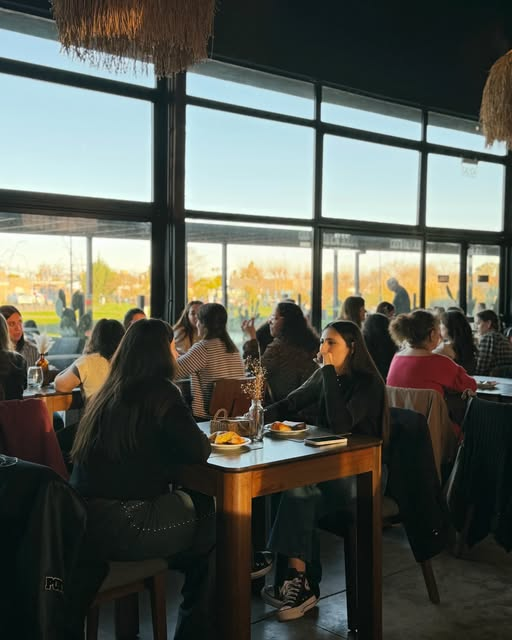

Parque Belgrano · Pergamino
Un lugar.
Todos
los sentidos.
La mesa, la conversación y ese momento en el que todo invita a quedarse.

A la mesa, sin apuro
La mejor parte
es compartirlo.
Una pausa en Parque Belgrano. Descubrí la propuesta de GAIA y elegí cómo querés vivir tu próxima visita.
Elegí tu momento
Una invitación
a encontrarse.
Lo que llega
a la mesa.
Platos, bebidas y opciones para conocer antes de venir. Consultá la carta publicada por el restaurante.
Ver cartaAlgo distinto
para compartir.
Seguí las novedades y propuestas especiales en el perfil de GAIA. Consultá fechas y disponibilidad con el equipo.
Ver novedadesUna fecha publicada
La mesa también tiene agenda.
Propuesta de cena de vinos
Fecha anunciada en una publicación del restaurante del 28 de septiembre. Horario, contenido y disponibilidad deben confirmarse directamente con GAIA.
Ver anuncio del restauranteMódulo de agenda propuesto. No toma reservas y requiere actualización de fechas.
Venís a GAIA
Nos encontramos
en Pergamino.
Parque Belgrano es el punto de encuentro. Coordiná tu visita y consultá los horarios vigentes por el canal del restaurante.
Tu próxima mesa
Hacemos lugar
para tu plan.
Contanos cuántos son y cuándo quieren venir. La disponibilidad se confirma con el restaurante.